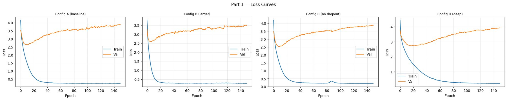
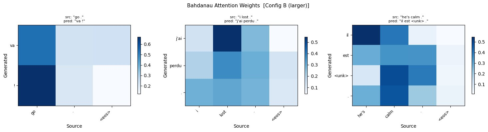
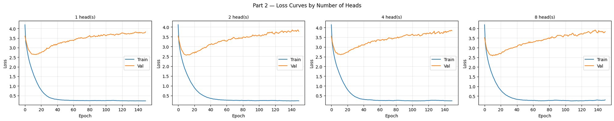
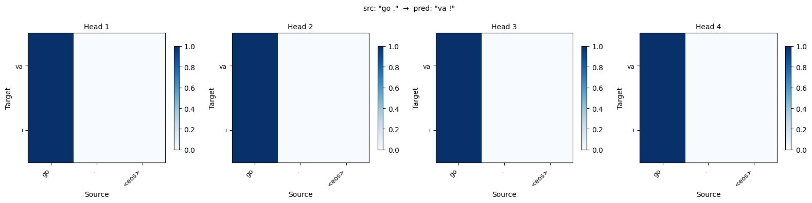
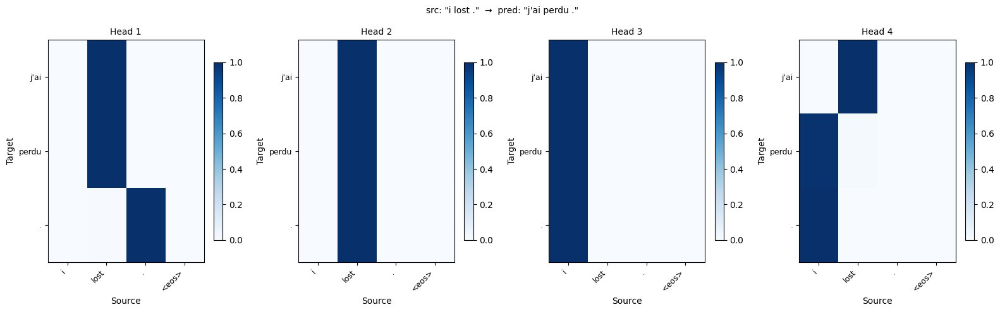
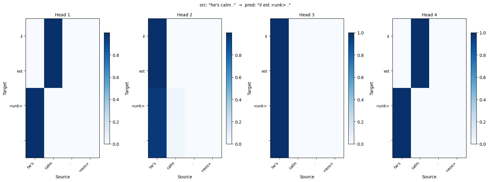
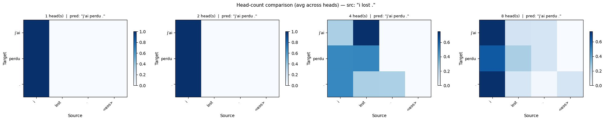

Part 1 extends a GRU-based sequence-to-sequence architecture with Bahdanau additive attention. At each decoding step, the decoder queries all encoder hidden states using a learned scoring function: score(q, k) = vT tanh(Wqq + Wkk). A softmax over these scores produces a weighted context vector summarising the most relevant source information for the current decoding step. The model was trained on 3,000 English–French sentence pairs from the D2L dataset using an 80/20 train/validation split, with Adam optimisation and gradient clipping at 1.0.
Four configurations were evaluated by varying hidden dimensionality, embedding size, network depth, and dropout regularisation. All configurations were trained for 150 epochs. Table 1 summarises the configurations and their best observed validation loss.
| Config | Embed | Hidden | Layers | Dropout | LR | Best Val Loss |
|---|---|---|---|---|---|---|
| A – Baseline | 64 | 128 | 2 | 0.1 | 0.005 | 2.64 (ep. 10) |
| B – Larger | 128 | 256 | 2 | 0.1 | 0.005 | 2.66 (ep. 10) |
| C – No Dropout | 64 | 128 | 2 | 0.0 | 0.005 | 2.53 (ep. 10) |
| D – Deep | 64 | 128 | 3 | 0.2 | 0.003 | 2.71 (ep. 10) |
Table 1. Hyperparameter configurations and best validation loss (Part 1).

All four configurations exhibit the same characteristic pattern: training loss drops sharply within the first 20 epochs and converges to approximately 0.22, while validation loss reaches its minimum around epoch 10 and then increases monotonically. This divergence is a clear indicator of overfitting, driven by the small dataset size — with only 2,400 effective training examples after the split, the model memorises the training set but cannot generalise. Early stopping at approximately epoch 10 would have yielded substantially better generalisation for all configurations.
| Config | Avg BLEU | "go ." | "i lost ." | "he's calm ." | "i'm home ." | "she runs ." |
|---|---|---|---|---|---|---|
| A – Baseline | 0.40 | 0.00 | 1.00 | 0.00 (<unk>) | 1.00 | 0.00 |
| B – Larger | 0.40 | 0.00 | 1.00 | 0.00 (<unk>) | 1.00 | 0.00 |
| C – No Dropout | 0.40 | 0.00 | 1.00 | 0.00 (mouillé) | 1.00 | 0.00 |
| D – Deep | 0.40 | 0.00 | 1.00 | 0.00 (<unk>+) | 1.00 | 0.00 |
Table 2. Per-sentence BLEU scores for all Part 1 configurations.
All four configurations achieve an identical average BLEU of 0.40. Two sentences score 1.0 consistently ("i lost" and "i'm home"). Three sentences score 0.0 — but for different reasons. "go ." and "she runs ." are translated correctly but score zero due to BLEU's brevity penalty, which heavily penalises predictions shorter than the reference. "he's calm ." fails because "calme" falls below the minimum frequency threshold and is absent from the target vocabulary. Notably, Config C predicts "mouillé" (wet) rather than <unk>, substituting the nearest in-distribution word.

The attention heatmaps confirm that the Bahdanau mechanism has learned meaningful source–target alignments despite the limited training data.
Part 2 replaces Bahdanau attention with scaled dot-product multi-head attention. Each head independently projects queries, keys, and values into a dhead = num_hiddens / num_heads dimensional subspace and computes: Attention(Q,K,V) = softmax(QKT / √dhead)V. All head outputs are concatenated and projected through Wo. The same GRU encoder–decoder structure from Part 1 is retained; only the attention module changes. All experiments use num_hiddens = 128, embed_size = 64, 2 GRU layers, dropout = 0.1, lr = 0.005, and 150 training epochs.
Four models were trained with 1, 2, 4, and 8 attention heads. The total hidden dimension (128) is held constant, so increasing the number of heads reduces the per-head dimension: 128 → 64 → 32 → 16 dimensions per head respectively.

| Heads | Best Val Loss | At Epoch | Final Train Loss | Final Val Loss |
|---|---|---|---|---|
| 1 | 2.66 | 10 | 0.219 | 3.82 |
| 2 | 2.58 | 10 | 0.232 | 3.77 |
| 4 | 2.64 | 10 | 0.234 | 3.84 |
| 8 | 2.62 | 10 | 0.298 | 3.83 |
Table 3. Loss metrics by number of attention heads.
The 1-head model converges fastest and most cleanly. The 2-head model achieves the best peak validation loss (2.58), suggesting two attention perspectives provide a marginal benefit. The 4-head model matches the 1-head baseline, showing diminishing returns as per-head dimensionality falls to 32. The 8-head model is the least stable — training loss variance increases after epoch 80 and the final training loss (0.298) is higher than all others, consistent with dimension starvation: 16 dimensions per head is too constrained to learn independent meaningful patterns.
| Heads | Avg BLEU | "go ." | "i lost ." | "he's calm ." | "i'm home ." | "she runs ." |
|---|---|---|---|---|---|---|
| 1 | 0.40 | 0.00 | 1.00 | 0.00 (reste calme) | 1.00 | 0.00 |
| 2 | 0.40 | 0.00 | 1.00 | 0.00 (il est en train) | 1.00 | 0.00 |
| 4 | 0.40 | 0.00 | 1.00 | 0.00 (<unk>) | 1.00 | 0.00 |
| 8 | 0.60 | 0.00 | 1.00 | 1.00 (il est calme) | 1.00 | 0.00 |
Table 4. Per-sentence BLEU scores by number of attention heads.
Three of four configurations score 0.40, matching Part 1. The 8-head model achieves 0.60 by correctly translating "he's calm ." to "il est calme ." Despite this, the 8-head model has the worst loss curves. This discrepancy illustrates a key limitation: with only five test sentences, a single correct translation shifts average BLEU by 0.20, making it a noisy indicator of generalisation quality. The loss curves provide a more reliable signal.
Comparing Part 1 and Part 2: multi-head attention does not provide a consistent improvement over Bahdanau attention on this dataset. The best peak validation loss in Part 2 (2.58, 2 heads) is comparable to Part 1 (2.53, Config C). For short sentences with simple, near-monotonic alignments, the additional expressiveness of multi-head attention yields diminishing returns within the fixed 128-unit hidden dimension.
Attention weights were visualised for each head of the 4-head model on three sentence pairs to examine whether heads specialise in distinct source–target relationships.

All four heads attend with weight ~1.0 to "go" when generating "va" and shift to punctuation for "!". A single-token source sentence presents only one possible alignment, leaving no room for head specialisation.

Figure 5 reveals the clearest evidence of head specialisation. Heads 1, 2, and 3 attend almost entirely to "lost" for both output tokens. Head 4, however, distributes attention more evenly across "i" and "lost" when generating "j'ai." This is linguistically motivated: Head 4 appears to track the subject pronoun ("i" → "j'") while the others specialise in the main verb. This division of representational labour, even in a simple two-token translation, is consistent with the theoretical motivation for multi-head attention.

Heads 1, 3, and 4 maintain sharp attention on "calm" and "he's." Head 2 is more diffuse, spreading attention across all source tokens when generating the unknown token. This may reflect a general-purpose fallback head that activates when no strong alignment signal is available, or a head responding to end-of-sequence context rather than a specific word.

As head count increases, averaged attention becomes more distributed: 1-head and 2-head models show near-one-hot focus on "lost," while 4-head and 8-head models spread attention more broadly. This progressive softening is consistent with dimension starvation — as per-head dimension decreases, individual heads have less capacity to commit to a single source token, and averaging further diffuses attention across the source.
This project implemented and evaluated two attention mechanisms for neural machine translation. Part 1 demonstrated that Bahdanau additive attention produces interpretable and linguistically meaningful alignments. Part 2 extended the model with scaled dot-product multi-head attention, finding that 2 heads provided the best generalisation while 8 heads degraded due to dimension starvation. Multi-head attention did not consistently outperform Bahdanau attention at this scale, consistent with the expectation that its benefits emerge at larger dataset sizes and sentence complexity.
| Finding | Detail |
|---|---|
| Overfitting is universal | All configurations overfit by epoch 10–20. Dataset size (3,000 examples) is the primary bottleneck, not model capacity. |
| Config C best val loss (P1) | No-dropout peaks at 2.53 but overfits fastest. Config A offers the best stability–performance tradeoff. |
| Larger model doesn't help | Config B (2× hidden units) matches Config A's val loss, confirming data is the limiting factor. |
| 2 heads optimal (P2) | 2 heads achieves best peak val loss (2.58). 8 heads degrades due to dimension starvation (16 dims/head). |
| Multi-head vs. Bahdanau | No consistent advantage for multi-head at this scale. Both achieve similar peak val losses (~2.5–2.6). |
| Head specialisation | Limited but present: Head 4 of the 4-head model differentiates subject from verb in "i lost ." |
| BLEU limitations | Brevity penalty and vocabulary gaps make BLEU unreliable on short sentences. Correct translations score 0.0. |